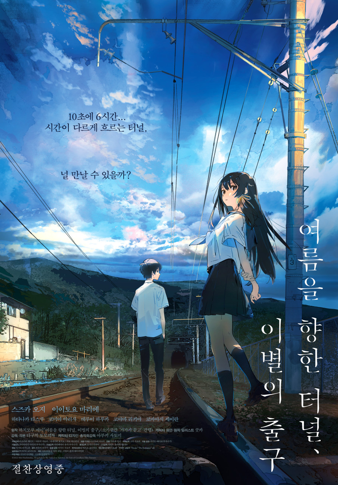

쌓인 기록 52편
| Title | 대무가 |
|---|---|
| Release | 2022.10.12 |
| Runtime | 108분 |
| Age Rating | 15세 이상 관람가 |
| Director | 이한종 |
| Cast | 박성웅, 양현민, 류경수, 서지유, 정경호 |
| Date | |
|---|---|
| Time | |
| Theater | |
| Screen |
| Title | 여름을 향한 터널, 이별의 출구 |
|---|---|
| Release | 2023.09.14 |
| Runtime | 82분 |
| Age Rating | 12세 이상 관람가 |
| Director | 타구치 토모히사 |
| Cast | 스즈카 오지, 이토요 마리에 |

| Date | |
|---|---|
| Time | |
| Theater | |
| Screen |
| Title | 바비 |
|---|---|
| Release | 2023.07.19 |
| Runtime | 114분 |
| Age Rating | 12세 이상 관람가 |
| Director | 그레타 거윅 |
| Cast | 마고 로비, 라이언 고슬링 |
| Date | |
|---|---|
| Time | |
| Theater | |
| Screen |